王红元
微博：coderwhy
微信：372623326


 内容概述
内容概述
认识组件化
注册组件
组件其他补充
组件数据存放
父子组件通信
父级向子级传递
子级向父级传递

插槽slot

 什么是组件化？
什么是组件化？
人面对复杂问题的处理方式：
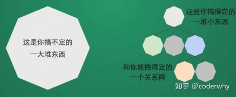
任何一个人处理信息的逻辑能力都是有限的
所以，当面对一个非常复杂的问题时，我们不太可能一
次性搞定一大堆的内容。
但是，我们人有一种天生的能力，就是将问题进行拆解。
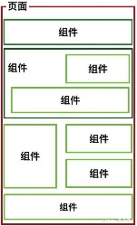
如果将一个复杂的问题，拆分成很多个可以处理的小问
题，再将其放在整体当中，你会发现大的问题也会迎刃
而解。
我们将一个完整的页面
分成很多个组件。
每个组件都用于实现页
面的一个功能块。
而每一个组件又可以进
行细分。
组件化也是类似的思想：
如果我们将一个页面中所有的处理逻辑全部放在一
起，处理起来就会变得非常复杂，而且不利于后续
的管理以及扩展。

但如果，我们讲一个页面拆分成一个个小的功能块，
每个功能块完成属于自己这部分独立的功能，那么
之后整个页面的管理和维护就变得非常容易了。
 Vue组件化思想
Vue组件化思想
组件化是Vue.js中的重要思想
它提供了一种抽象，让我们可以开发出一个个独立可复用的小组件来构造我们的应用。
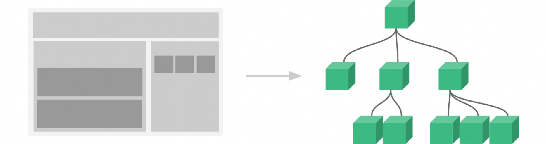
任何的应用都会被抽象成一颗组件树。
组件化思想的应用：
有了组件化的思想，我们在之后的开发中就要充分的利用它。
尽可能的将页面拆分成一个个小的、可复用的组件。
这样让我们的代码更加方便组织和管理，并且扩展性也更强。

所以，组件是Vue开发中，非常重要的一个篇章，要认真学习。

 注册组件的基本步骤
注册组件的基本步骤
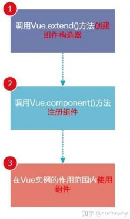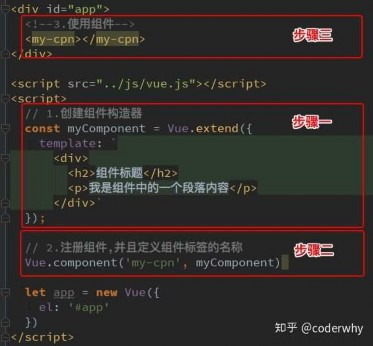
组件的使用分成三个步骤：
创建组件构造器
注册组件
使用组件。
我们来看看通过代码如何注册组件
查看运行结果：
和直接使用一个div看起来并没有
什么区别。

但是我们可以设想，如果很多地
方都要显示这样的信息，我们是
不是就可以直接使用<my-
cpn></my-cpn>来完成呢？

 注册组件步骤解析
注册组件步骤解析
这里的步骤都代表什么含义呢？
1.Vue.extend()：
调用Vue.extend()创建的是一个组件构造器。
通常在创建组件构造器时，传入template代表我们自定义组件的模板。
该模板就是在使用到组件的地方，要显示的HTML代码。
事实上，这种写法在Vue2.x的文档中几乎已经看不到了，它会直接使用下面我们会讲到的语法糖，但是在很多资料还是会
提到这种方式，而且这种方式是学习后面方式的基础。
2.Vue.component()：
调用Vue.component()是将刚才的组件构造器注册为一个组件，并且给它起一个组件的标签名称。
所以需要传递两个参数：1、注册组件的标签名 2、组件构造器
3.组件必须挂载在某个Vue实例下，否则它不会生效。（见下页）
我们来看下面我使用了三次<my-cpn></my-cpn>

而第三次其实并没有生效：


 第三步的解析
第三步的解析
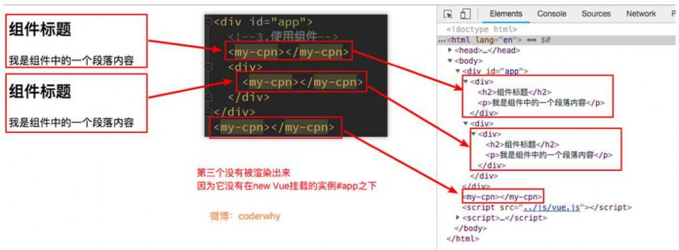

 全局组件和局部组件
全局组件和局部组件
当我们通过调用Vue.component()注册组件时，组件的注册是全局的

如果我们注册的组件是挂载在某个实例中, 那么就是一个局部组件
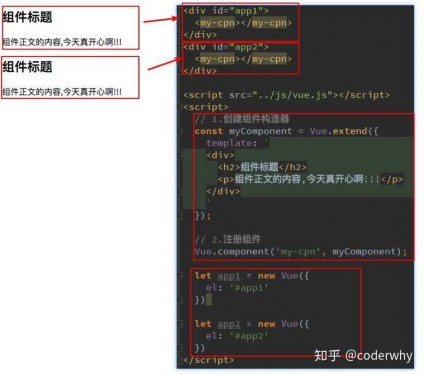 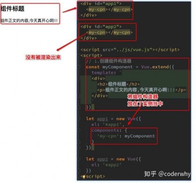

 父组件和子组件
父组件和子组件
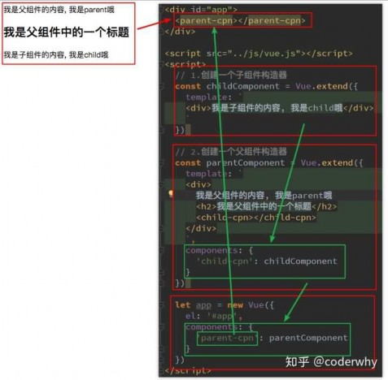
在前面我们看到了组件树：
组件和组件之间存在层级关系
而其中一种非常重要的关系就是父子组件的关系
我们来看通过代码如何组成的这种层级关系：
父子组件错误用法：以子标签的形式在Vue实例中使用
因为当子组件注册到父组件的components时，Vue会编
译好父组件的模块
该模板的内容已经决定了父组件将要渲染的HTML（相当
于父组件中已经有了子组件中的内容了）
<child-cpn></child-cpn>是只能在父组件中被识别的。

类似这种用法，<child-cpn></child-cpn>是会被浏览器
忽略的。

 注册组件语法糖
注册组件语法糖
在上面注册组件的方式，可能会有些繁琐。
Vue为了简化这个过程，提供了注册的语法糖。
主要是省去了调用Vue.extend()的步骤，而是可以直接使用一个对象来代替。

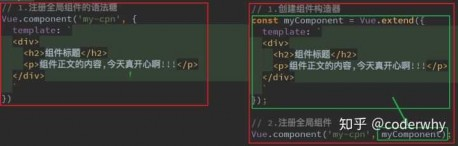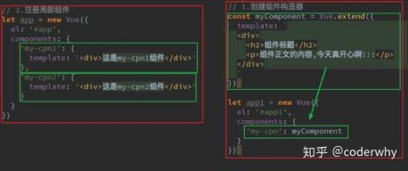

 模板的分离写法
模板的分离写法
刚才，我们通过语法糖简化了Vue组件的注册过程，另外还有一个地方的写法比较麻烦，就是template模块写法。
如果我们能将其中的HTML分离出来写，然后挂载到对应的组件上，必然结构会变得非常清晰。
Vue提供了两种方案来定义HTML模块内容：
使用<script>标签

使用<template>标签
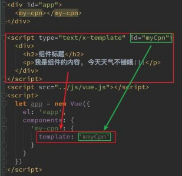 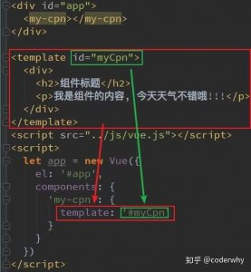

 组件可以访问Vue实例数据吗?
组件可以访问Vue实例数据吗?
组件是一个单独功能模块的封装：
这个模块有属于自己的HTML模板，也应该有属性自己的数据data。
组件中的数据是保存在哪里呢？顶层的Vue实例中吗？
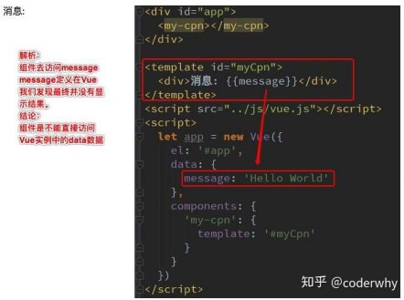
我们先来测试一下，组件中能不能直接访问Vue实例中的data
我们发现不能访问，而且即使可以访问，如果
将所有的数据都放在Vue实例中，Vue实例就会
变的非常臃肿。

结论：Vue组件应该有自己保存数据的地方。

 组件数据的存放
组件数据的存放
组件自己的数据存放在哪里呢?
组件对象也有一个data属性(也可以有methods等属性，下面我们有用到)
只是这个data属性必须是一个函数

而且这个函数返回一个对象，对象内部保存着数据
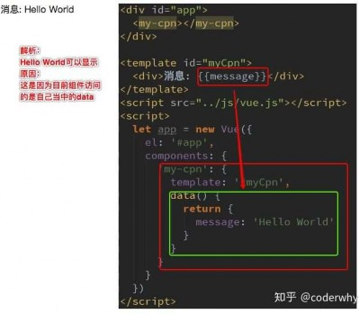

 为什么是一个函数呢?
为什么是一个函数呢?
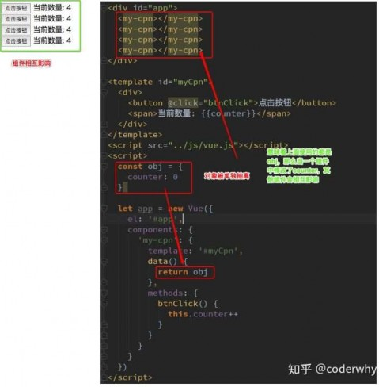
为什么data在组件中必须是一个函数呢?
首先，如果不是一个函数，Vue直接就会报错。

其次，原因是在于Vue让每个组件对象都返回一个新
的对象，因为如果是同一个对象的，组件在多次使用
后会相互影响。

 父子组件的通信
父子组件的通信
在上一个小节中，我们提到了子组件是不能引用父组件或者Vue实例的数据的。
但是，在开发中，往往一些数据确实需要从上层传递到下层：
比如在一个页面中，我们从服务器请求到了很多的数据。
其中一部分数据，并非是我们整个页面的大组件来展示的，而是需要下面的子组件进行展示。
这个时候，并不会让子组件再次发送一个网络请求，而是直接让大组件(父组件)将数据传递给小组件(子组件)。
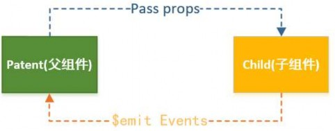
如何进行父子组件间的通信呢？Vue官方提到
通过props向子组件传递数据
通过事件向父组件发送消息
在下面的代码中，我直接将Vue实例当做父组件，并且其中包含子组件来简化代码。

真实的开发中，Vue实例和子组件的通信和父组件和子组件的通信过程是一样的。

 props基本用法
props基本用法
在组件中，使用选项props来声明需要从父级接收到的数据。
props的值有两种方式：
方式一：字符串数组，数组中的字符串就是传递时的名称。
方式二：对象，对象可以设置传递时的类型，也可以设置默认值等。

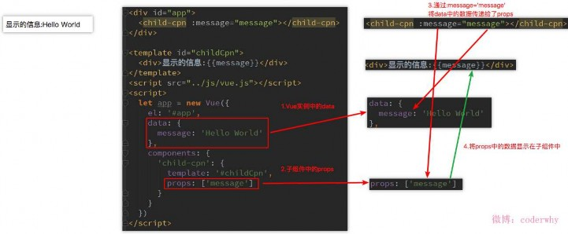
我们先来看一个最简单的props传递：

 props数据验证
props数据验证
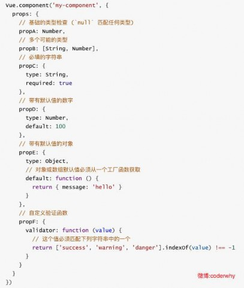
在前面，我们的props选项是使用一个数组。
我们说过，除了数组之外，我们也可以使用对象，当需要对props，就需要对象写法了。
验证都支持哪些数据类型呢？
String
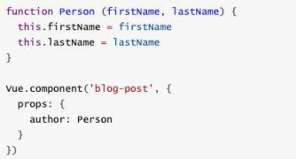
Number
Boolean
Array
Object
Date
Function
Symbol

当我们有自定义构造函数时，验证也支持自定义的类型

 子级向父级传递
子级向父级传递
props用于父组件向子组件传递数据，还有一种比较常见的是子组件传递数据或事件到父组件中。
我们应该如何处理呢？这个时候，我们需要使用自定义事件来完成。
什么时候需要自定义事件呢？
当子组件需要向父组件传递数据时，就要用到自定义事件了。
我们之前学习的v-on不仅仅可以用于监听DOM事件，也可以用于组件间的自定义事件。
自定义事件的流程：
在子组件中，通过$emit()来触发事件。
在父组件中，通过v-on来监听子组件事件。
我们来看一个简单的例子：
我们之前做过一个两个按钮+1和-1，点击后修改counter。
我们整个操作的过程还是在子组件中完成，但是之后的展示交给父组件。

这样，我们就需要将子组件中的counter，传给父组件的某个属性，比如total。


自定义事件代码
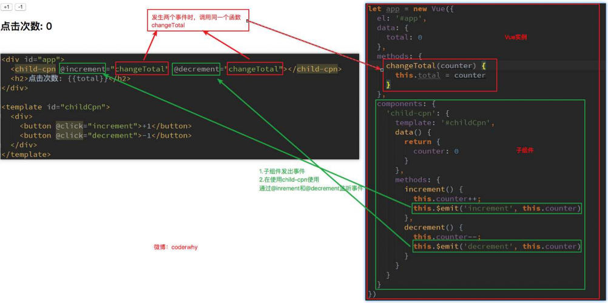

 父子组件的访问方式： $children
父子组件的访问方式： $children
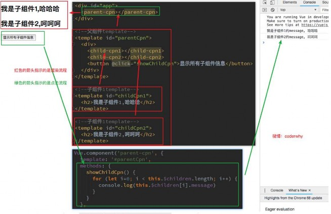
有时候我们需要父组件直接访问子组件，
子组件直接访问父组件，或者是子组件访
问跟组件。
父组件访问子组件：使用$children或
$refs reference(引用)
子组件访问父组件：使用$parent
我们先来看下$children的访问
this.$children是一个数组类型，它包
含所有子组件对象。

我们这里通过一个遍历，取出所有子
组件的message状态。

 父子组件的访问方式： $refs
父子组件的访问方式： $refs
$children的缺陷：
通过$children访问子组件时，是一个数组类型，访问其中的子组件必须通过索引值。
但是当子组件过多，我们需要拿到其中一个时，往往不能确定它的索引值，甚至还可能会发生变化。
有时候，我们想明确获取其中一个特定的组件，这个时候就可以使用$refs
$refs的使用：
$refs和ref指令通常是一起使用的。
首先，我们通过ref给某一个子组件绑定一个特定的ID。

其次，通过this.$refs.ID就可以访问到该组件了。
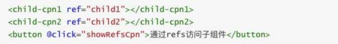
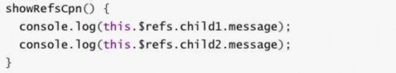

 父子组件的访问方式： $parent
父子组件的访问方式： $parent
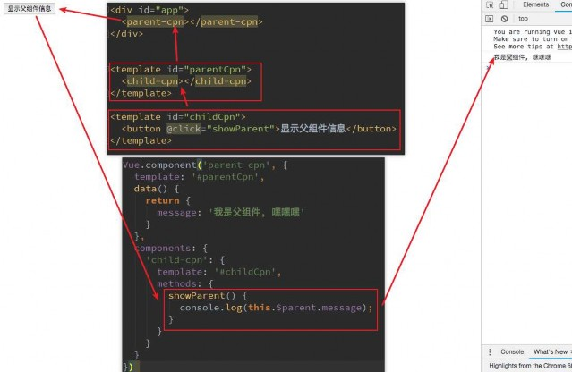
如果我们想在子组件中直接访问父组件，可以通
过$parent
注意事项：
尽管在Vue开发中，我们允许通过$parent
来访问父组件，但是在真实开发中尽量不要
这样做。
子组件应该尽量避免直接访问父组件的数据，
因为这样耦合度太高了。
如果我们将子组件放在另外一个组件之内，
很可能该父组件没有对应的属性，往往会引
起问题。

另外，更不好做的是通过$parent直接修改
父组件的状态，那么父组件中的状态将变得
飘忽不定，很不利于我的调试和维护。

 非父子组件通信
非父子组件通信
刚才我们讨论的都是父子组件间的通信，那如果是非父子关系呢?
非父子组件关系包括多个层级的组件，也包括兄弟组件的关系。
在Vue1.x的时候，可以通过$dispatch和$broadcast完成
$dispatch用于向上级派发事件
$broadcast用于向下级广播事件
但是在Vue2.x都被取消了
在Vue2.x中，有一种方案是通过中央事件总线，也就是一个中介来完成。
但是这种方案和直接使用Vuex的状态管理方案还是逊色很多。

并且Vuex提供了更多好用的功能，所以这里我们暂且不讨论这种方案，后续我们专门学习Vuex的状态管理。

 为什么使用slot
为什么使用slot
slot翻译为插槽：
在生活中很多地方都有插槽，电脑的USB插槽，插板当中的电源插槽。
插槽的目的是让我们原来的设备具备更多的扩展性。
比如电脑的USB我们可以插入U盘、硬盘、手机、音响、键盘、鼠标等等。
组件的插槽：
组件的插槽也是为了让我们封装的组件更加具有扩展性。
让使用者可以决定组件内部的一些内容到底展示什么。
栗子：移动网站中的导航栏。
移动开发中，几乎每个页面都有导航栏。
导航栏我们必然会封装成一个插件，比如nav-bar组件。
一旦有了这个组件，我们就可以在多个页面中复用了。

但是，每个页面的导航是一样的吗？No，我以京东M站为例

 如何封装这类组件呢？slot
如何封装这类组件呢？slot
如何去封装这类的组件呢？
它们也很多区别，但是也有很多共性。
如果，我们每一个单独去封装一个组件，显然不合适：比如每个页面都返回，这部分内容我们就要重复去封装。
但是，如果我们封装成一个，好像也不合理：有些左侧是菜单，有些是返回，有些中间是搜索，有些是文字，
等等。
如何封装合适呢？抽取共性，保留不同。
最好的封装方式就是将共性抽取到组件中，将不同暴露为插槽。
一旦我们预留了插槽，就可以让使用者根据自己的需求，决定插槽中插入什么内容。
是搜索框，还是文字，还是菜单。由调用者自己来决定。

这就是为什么我们要学习组件中的插槽slot的原因。

 slot基本使用
slot基本使用
了解了为什么用slot，我们再来谈谈如何使用slot？
在子组件中，使用特殊的元素<slot>就可以为子组件开启一个插槽。
该插槽插入什么内容取决于父组件如何使用。
我们通过一个简单的例子，来给子组件定义一个插槽：
<slot>中的内容表示，如果没有在该组件中插入任何其他内容，就默认显示该内容

有了这个插槽后，父组件如何使用呢？
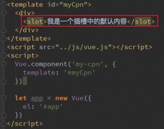 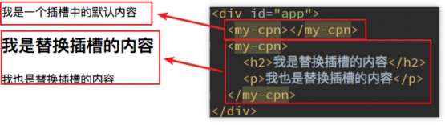

 具名插槽slot
具名插槽slot
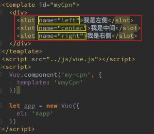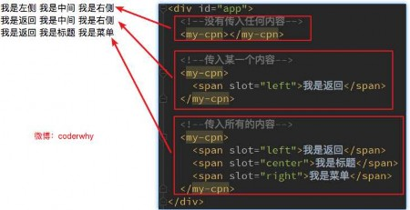
当子组件的功能复杂时，子组件的插槽可能并非是一个。
比如我们封装一个导航栏的子组件，可能就需要三个插
槽，分别代表左边、中间、右边。
那么，外面在给插槽插入内容时，如何区分插入的是哪
一个呢？
这个时候，我们就需要给插槽起一个名字
如何使用具名插槽呢？
非常简单，只要给slot元素一个name属性即可
<slot name='myslot'></slot>
我们来给出一个案例：

这里我们先不对导航组件做非常复杂的封装，先了解具
名插槽的用法。

 编译作用域
编译作用域
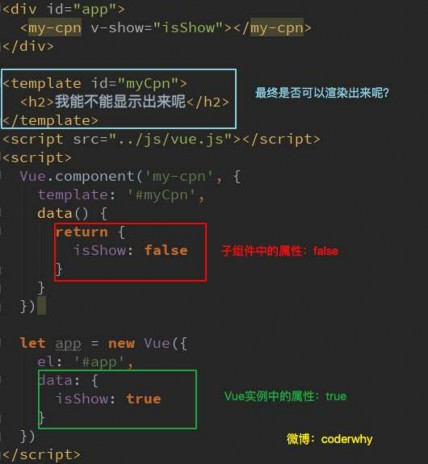
在真正学习插槽之前，我们需要先理解一个概念：编译作用域。
官方对于编译的作用域解析比较简单，我们自己来通过一个例子来理解这个概念：
我们来考虑下面的代码是否最终是可以渲染出来的：
<my-cpn v-show="isShow"></my-cpn>中，我们使用了isShow属性。
isShow属性包含在组件中，也包含在Vue实例中。
答案：最终可以渲染出来，也就是使用的是Vue实例的属性。
为什么呢？
官方给出了一条准则：父组件模板的所有东西都会在父级作用域内编译；子
而我们在使用<my-cpn v-show="isShow"></my-cpn>的时候，整个组
件的使用过程是相当于在父组件中出现的。
那么他的作用域就是父组件，使用的属性也是属于父组件的属性。

因此，isShow使用的是Vue实例中的属性，而不是子组件的属性。

 作用域插槽：准备
作用域插槽：准备
作用域插槽是slot一个比较难理解的点，而且官方文档说的又有点不清晰。
这里，我们用一句话对其做一个总结，然后我们在后续的案例中来体会：
父组件替换插槽的标签，但是内容由子组件来提供。
我们先提一个需求：
子组件中包括一组数据，比如：pLanguages: ['JavaScript', 'Python', 'Swift', 'Go', 'C++']
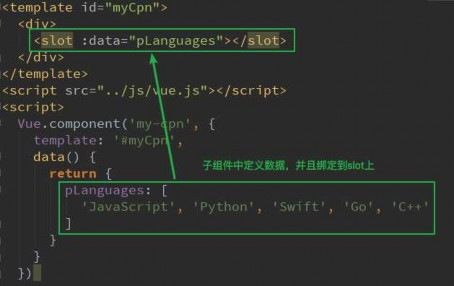
需要在多个界面进行展示：
某些界面是以水平方向一一展示的，
某些界面是以列表形式展示的，
某些界面直接展示一个数组
内容在子组件，希望父组件告诉我们如何展示，怎么办呢？
利用slot作用域插槽就可以了

我们来看看子组件的定义：

 作用域插槽：使用
作用域插槽：使用
在父组件使用我们的子组件时，从子组件中拿到数据：
我们通过<template slot-scope="slotProps">获取到slotProps属性

在通过slotProps.data就可以获取到刚才我们传入的data了
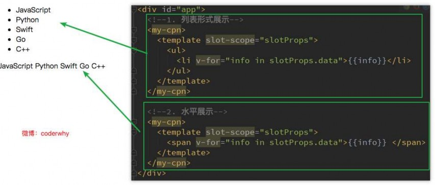